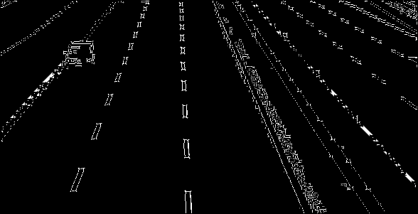
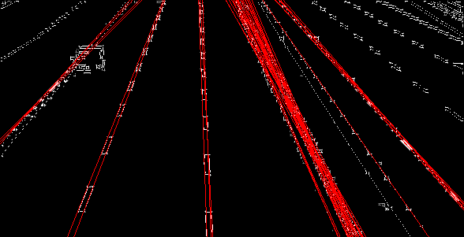
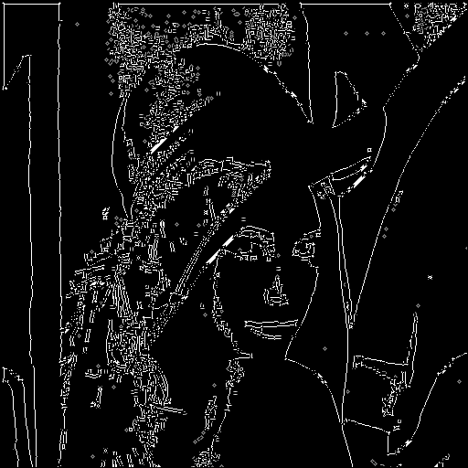
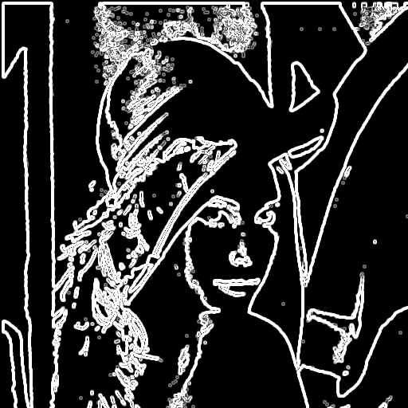
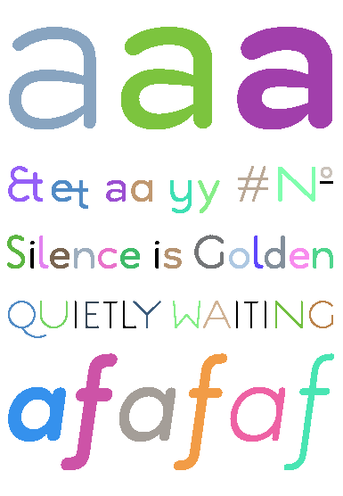
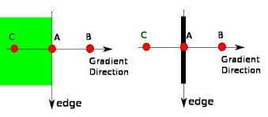
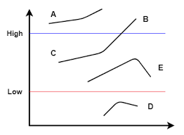

CVL¶
Overview¶

Computer Vision Library in C.
CVL is a small Computer Vision Library implemented in C that demonstrates image processing on raster images. It supports Netpbm image formats (PBM, PGM, PPM) and various image processing pipelines including thresholding, filtering, connected component labeling, and edge detection.
Examples¶
Hough Transform (Line Detection)¶
#include <cvl/cvl.h>
int main(void) {
Image img = cvl_imread("lanes.ppm");
Image binary = cvl_binarize_new(&img, 150);
Matrix mat = cvl_img2mat(binary);
// Canny Edges.
const int sigma = 1;
const int lo = 50;
const int hi = 120;
Matrix edges = cvl_canny_new(&mat, sigma, lo, hi);
Image edges_img = cvl_mat2img(edges, 0, 1);
// Hough Lines.
double drho = 1.0;
double dtheta = M_PI / 180.0;
int thresh = 70;
cvl_hough_lines_t lines = cvl_hough_lines_new(&edges, drho, dtheta, thresh);
Image lines_img = cvl_img_copy(&edges_img);
cvl_draw_hough_lines(&lines_img, &lines);
cvl_imwrite("./data/modified/original.ppm", &img);
cvl_imwrite("./data/modified/canny-edges.pgm", &edges_img);
cvl_imwrite("./data/modified/hough-lines.ppm", &lines_img);
// free memory...
return 0;
}


Performing Canny Edge Detection¶
#include <cvl/cvl.h>
int main(void) {
Image img = cvl_imread("lena.ppm");
Image binary = cvl_binarize_new(&img, 128);
Matrix lena = cvl_img2mat(binary);
const int sigma = 1;
const int lo = 50;
const int hi = 120;
Matrix edges = cvl_canny_new(&lena, sigma, lo, hi);
Image edges_img = cvl_mat2img(edges, 0, 1);
cvl_imwrite("original.ppm", &img);
cvl_imwrite("binary.pbm", &binary);
cvl_imwrite("canny.pgm", &edges_img);
// free memory...
return 0;
}

Applying a Sobel Filter to an Image¶
#include <cvl/cvl.h>
int main(void) {
Image img = cvl_imread("lena.ppm");
Image binary = cvl_binarize_new(&img, 128);
Matrix lena = cvl_img2mat(binary);
Matrix lena_smooth = cvl_blur_new(&lena, 3);
Matrix gx = cvl_mat_create(lena.height, lena.width);
Matrix gy = cvl_mat_create(lena.height, lena.width);
cvl_sobel(&lena_smooth, &gx, &gy);
// Compute G and θ from Sobel Gradients (Gx, Gy).
Matrix mags = cvl_sobel_mag(&lena_smooth);
Matrix angs = cvl_sobel_angle(&lena_smooth);
Image mags_img = cvl_mat2img(mags, 0, 1);
Image angs_img = cvl_mat2img(angs, 0, 1);
cvl_binarize(&angs_img, 3.14/2);
cvl_imwrite("original.ppm", &img);
cvl_imwrite("binary.pbm", &binary);
cvl_imwrite("mags.pgm", &mags_img);
cvl_imwrite("angles.pgm", &angs_img);
// free memory...
return 0;
}

Connected Component Labeling¶
#include <cvl/cvl.h>
int main(void) {
Image img = cvl_imread("text.pgm");
cvl_binarize(&img, 128);
Matrix labels = cvl_mat_create(img.height, img.width);
cvl_imwrite("original.pbm", &img);
int num_components = cvl_connected_components(&img, &labels, 4);
printf("\nNumber of Components: %d\n", num_components);
num_components = cvl_color_components(&img, &labels, 100);
printf("\nNumber of Components: %d\n", num_components);
cvl_imwrite("labeled-components.ppm", &img);
// free memory...
return 0;
}
Number of Components: 50 // larger than 4
Number of Components: 39 // larger than 100

API¶
Core — cvl_core.h¶
cvl types¶
i stores intensity (greyscale), while channels r, g, b store color.
typedef enum cvl_thresh_type {
CVL_THRESH_BINARY,
CVL_THRESH_BINARY_INV,
CVL_THRESH_TRUNC,
CVL_THRESH_TOZERO,
CVL_THRESH_TOZERO_INV,
} cvl_thresh_type;
Supported Thresholding Modes.
| mode | operation |
|---|---|
| CVL_THRESH_BINARY | \(\text{dst}(x, y) = \begin{cases} \text{maxval} & \text{src}(x, y) > \text{thresh} \\ 0 & \text{otherwise} \end{cases}\) |
| CVL_THRESH_BINARY_INV | \(\text{dst}(x, y) = \begin{cases} 0 & \text{src}(x, y) > \text{thresh} \\ \text{maxval} & \text{otherwise} \end{cases}\) |
| CVL_THRESH_TRUNC | \(\text{dst}(x, y) = \begin{cases} \text{thresh} & \text{src}(x, y) > \text{thresh} \\ \text{src}(x, y) & \text{otherwise} \end{cases}\) |
| CVL_THRESH_TOZERO | \(\text{dst}(x, y) = \begin{cases} \text{src}(x, y) & \text{src}(x, y) > \text{thresh} \\ 0 & \text{otherwise} \end{cases}\) |
| CVL_THRESH_TOZERO_INV | \(\text{dst}(x, y) = \begin{cases} 0 & \text{src}(x, y) > \text{thresh} \\ \text{src}(x, y) & \text{otherwise} \end{cases}\) |
cvl_img_create¶
Allocates a new image with the given dimensions and fills it with zeros.
Allocates a new image with the given dimensions and fills it with value.
cvl_img_free¶
Frees memory associated with an image.
cvl_mat_create¶
Allocates a new matrix with the given dimensions and fills it with zeros.
Allocates a new matrix with the given dimensions and fills it with values from the given array.
cvl_mat_free¶
Frees memory associated with a matrix.
cvl_img2mat¶
Converts an image to a greyscale matrix.
cvl_img2mat¶
Converts a matrix to an image with scaling and gamma correction.
scale == 0: values are 1/255 normalized before applying gamma.scale != 0: values are min/max normalized before applying gamma.gamma == 1.0: linear scaling (no change in contrast).gamma < 1.0: enhances darker values (brightens the image).gamma > 1.0: suppressess darker values (darkens the image).The final result is clamped to [0, 255].
I/O — cvl_io.h¶
cvl_imread¶
Reads an image from a specified file.
cvl_imwrite¶
Saves an image to a specified file. Image format determined by file extension.
Image Processing — cvl_imgproc.h¶
cvl_threshold¶
int cvl_threshold(Image *src, Image *dst, int thresh, int maxval, int type);
Image cvl_threshold_new(Image *src, int thresh, int maxval, int type);
Applies a fixed-level threshold to each array element - determined by type.
cvl_binarize¶
Changes all pixels below thresh to black (0), otherwise to white (255).
Equivalent to
cvl_threshold(src, dst, thresh, maxval, CVL_THRESH_BINARY)
cvl_add_noise¶
Adds salt-and-pepper noise to a binary image.
Randomly flips binary pixels with probability p.
cvl_rotate¶
Rotates an image by 180 degrees.
cvl_invert¶
Inverts the RGB channels of an image according to the given max value.
cvl_expand¶
Changes all pixels with black neighbors to black.
cvl_shrink¶
Changes all pixels with white neighbors to white.
cvl_connected_components¶
Performs Connected Component Labeling.
Labels connected regions of black pixels and stores the result in
labels.
@param img— Input binary image.@param labels— Output matrix of same size storing component labels.@param connectivity— Neighborhood connectivity (4 or 8).@return— Number of connected components found.
cvl_color_components¶
Colors connected components exceeding a size threshold.
Components with size greater than or equal to
threshare assigned distinct RGB colors in the output image.
@param img— Input image (modified in-place).@param labels— Matrix of component labels.@param thresh— Minimum component size to be labeled.@return— Number of components meeting the size threshold.
cvl_correlate¶
void cvl_correlate(Matrix *src, Matrix *dst, Matrix *kernel);
Matrix cvl_correlate_new(Matrix *src, Matrix *kernel);
Computes the correlation of a matrix with a kernel.
Applies a sliding kernel over the input matrix without fipping it.
Zero-padding is used at boundaries.
@param src— Input matrix.@param dst— Output matrix.@param kernel— Correlation kernel.
cvl_convolve¶
void cvl_convolve(Matrix *src, Matrix *dst, Matrix *kernel);
Matrix cvl_convolve_new(Matrix *src, Matrix *kernel);
Computes the convolution of a matrix with a kernel.
Applies a sliding kernel over the input matrix with kernel fipping.
Zero-padding is used at boundaries.
@param src— Input matrix.@param dst— Output matrix.@param kernel— Convolution kernel.
cvl_blur¶
Applies a mean (box) filter to a matrix.
Each output value is the average of a ksize x ksize neighborhood.
@param src— Input matrix.@param dst— Output matrix.@param ksize— Kernel size (must be positive).
cvl_median_blur¶
void cvl_median_blur(Matrix *src, Matrix *dst, int ksize);
Matrix cvl_median_blur_new(Matrix *src, int ksize);
Apply median blur using replicated outlier pixel values.
Applies a median filter to a matrix.
Each output value is the median of a ksize × ksize neighborhood.
Border values are handled using replication.
@param src— Input matrix.@param dst— Output matrix.@param ksize— Kernel size (must be odd).
cvl_sobel¶
Computes Sobel gradients of a matrix.
Produces horizontal (
gx) and vertical (gy) gradient components.
@param src— Input matrix.@param gx— Output matrix for horizontal gradients.@param gy— Output matrix for vertical gradients.
cvl_canny¶
void cvl_canny(Matrix *src, Matrix *dst, int sigma, int lo, int hi);
Matrix cvl_canny_new(Matrix *src, int sigma, int lo, int hi);
Performs Canny edge detection.
Applies smoothing, gradient computation, non-maximum suppression, and hysteresis thresholding to detect edges.
@param src— Input matrix.@param dst— Output matrix containing edge magnitudes (non-edges set to 0).@param sigma— Standard deviation for Gaussian smoothing.@param lo— Lower threshold for hysteresis.@param hi— Upper threshold for hysteresis.
The Canny algorithm finds edges in an image by identifing regions of rapid intensity change and refining them into thin, connected contours.
1 — Noise Reduction
Reduce image noise via cvl_blur.
2 — Gradient Computation
Estimate intensity gradients using the Sobel operator — cvl_sobel:
- Horizontal gradient: \(G_x\)
- Vertical gradient: \(G_y\)
From these, compute:
- Edge magnitude: \(\text{G} = \sqrt{G_x^2 + G_y^2}\)
- Edge orientation: \(\text{θ} = \text{atan2}(G_y, G_x)\)
3 — Non-maximum Suppression
Remove pixels that are not local maxima along the graident direction — edge thinning.
Gradients often produce thick edges. This step thins such edges by retaining only local maxima along the gradient direction.
Consider the following image:

At some point during the scan, we come across Point A and must decide whether or not to suppress it.
Point A is on the edge in the vertical direction.
Points B and C are in the same gradient direction — normal to the edge direction.
If A is not greater than its neighbors along the gradient direction (B and C), it is supressed (set to zero).
4 — Hysteresis Thresholding
At this point, we have an image representing the maximum magnitudes of changes in intensity (i.e., maximum intensity gradients). We can refer to these pixels as edge candidates.
Hysteresis thresholding differentiates true edges from noise using a multi-pass algorithm that filters edge candidates using two distinct thresholds (hi and lo).
This process occurs in two stages:
1. Classification — filters edge candidates into (edge, candidate, non-edge) according to the thresholds
2. Edge Tracking — filters remaining candidates according to their connectiveity to edges
- Candidates connected to edges are promoted to edges
- Remaining candidates are suppressed
Consider the following image:

Point A is considered an edge as it is above the high threshold.
Point B is considered an edge as it is above the high threshold.
Point C is considered an edge as it is between thresholds and is connected to an edge (B).
Point E is considered a non-edge as it is between thresholds and is not connected to an edge.
Point D is considered a non-edge as it is below the low threshold.
cvl_hough¶
int cvl_hough_lines(const Matrix *edges, cvl_hough_lines_t *dst, double drho, double dtheta, int thresh);
cvl_hough_lines_t cvl_hough_lines_new(const Matrix *edges, double drho, double dtheta, int thresh);
Performs Hough line detection.
Transforms edge pixels from image space into parameter space and identifies prominent lines via the Hough Transform.
@param edges— Input matrix - edge map (non-zero values indicate edge pixels, e.g., fromcvl_canny).@param dst— Output struct containing detected lines.@param drho— Resolution of the distance parameter ρ.@param dtheta— Resolution of the angle parameter θ (in radians).@param thresh— Minimum number of votes required to recognize a line.
Instead of representing lines in slope-intercept form (\(y = mx + b\)), which fails for vertical lines, the Hough Transform maps each edge pixel \((x, y)\) into a sinusoidal curve in parameter space using the normal form:
- \(\rho \in [-\rho_{\max}, \rho_{\max}]\) is the perpendicular distance from the origin to the line,
- \(\theta \in [0, \pi]\) is the angle of the normal vector, and
- \(\rho_{\max} = \sqrt{w^2 + h^2}\)
Each point in the \((\rho, \theta)\) space corresponds to a line in the image.
Using accumulator matrix \(A[\rho][\theta]\) to store the number of votes for a given line candiate, we can outline the algorithm as follows:
1 — Voting
2 — Peak Detection
After voting, lines are identified by finding local maxima in the accumulator.
Bins with votes < thresh are discarded.
The remaining bins are scanned to determine whether they are peaks or not.
- A simple algorithm is to designate \(A[\rho][\theta]\) as a peak if it is a local max in its 4-neighborhood.
- Or we can use something like non-maximum suppression from
cvl_canny.
Each peak corresponds to a detected line:
- \(\rho = r \cdot d\rho - \rho_{\max}\)
- \(\theta = t \cdot d\theta\)
Detected lines are returned as \((\rho, \theta, \text{votes})\) sorted by vote count.